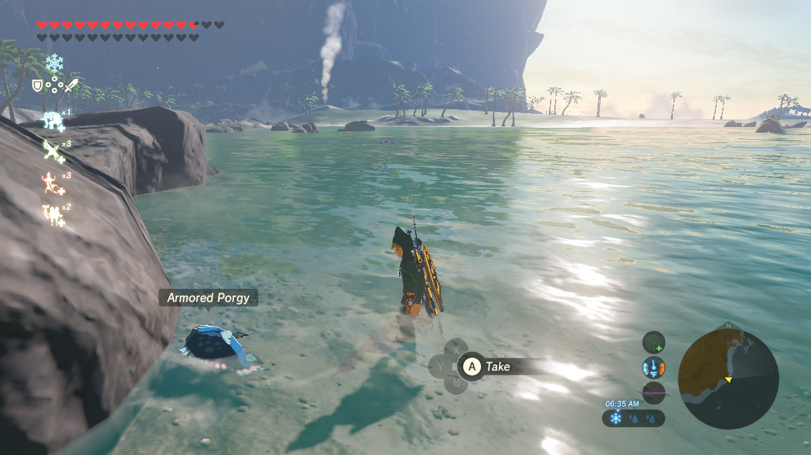
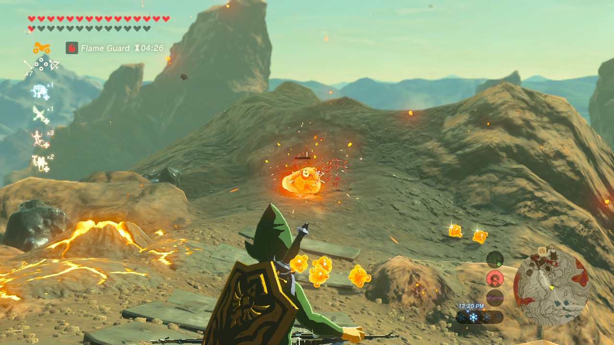
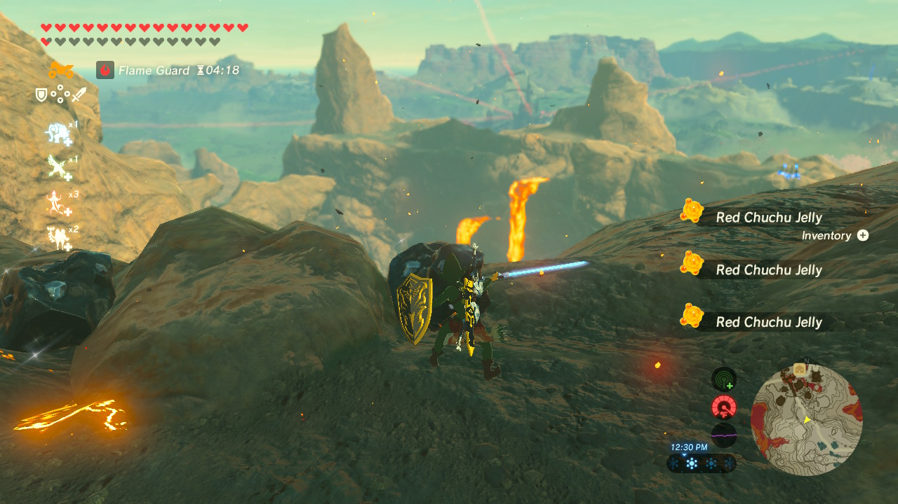
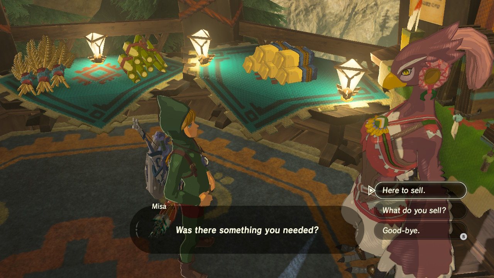
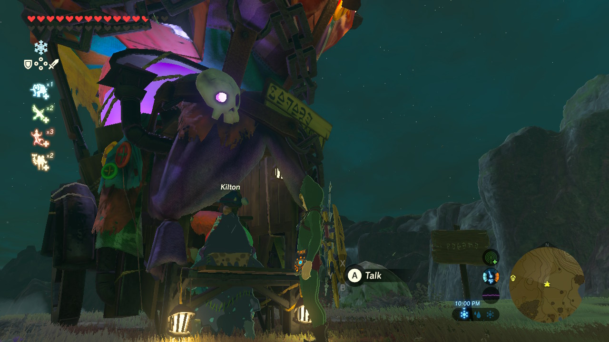

The task of gathering the ingredients sure wasn't easy, but throughout his journey, Link had a lot of fun, and he wants to share his experience with you.
For the dubious food ingredients link had to fish, hunt, and mow the grass.

For the rock-hard food ingredients, he had to go to Death Mountain, and attempt to obtain the ingredients without getting cooked in the process.


After all that running, hunting, and burning, Link decided that it was time to make things easier and buy the ingredients instead of fighting for them.
I'm joking. After running around throughout all Hyrule, he found out that those items can't be found unless you buy them, and ran straight to his favorite store where he actually found almost everything he needed.



Home page